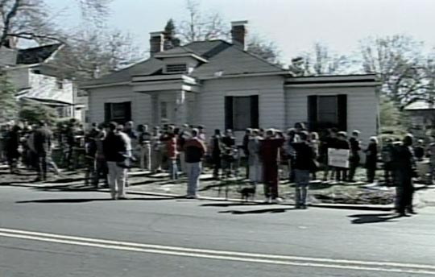

The Duke Incident
The first report of the alleged rape in Durham appeared on March 18, 2006, in the local newspaper, the News and Observer. The three-line story stated that police were investigating a possible rape near the Duke University campus on March 13. Details about the incident remained scant, in fact, until March 24, when the News and Observer broke the news that police were investigating Duke’s lacrosse team in connection with the alleged assault. The team was ranked second in the nation at the time.
© ABC NewsThe basic outline of the story soon emerged. The captains of the Duke lacrosse team had hosted a party in an off-campus house on the evening of March 13, and had hired two exotic dancers from a local escort agency to perform. The women, both African-American, arrived shortly before midnight to a houseful of male college students, many drunk and rowdy. The women began dancing, but when several of the youths yelled racially insensitive remarks, the dancers left the house. After one student apologized, however, the women returned to the party.
The accusation. The alleged victim—a 27-year-old single mother of two and student at nearby North Carolina Central University—told police that several partygoers grabbed her around the neck when she reentered the house. She said she was separated from the other exotic dancer, and that several men—all white—dragged her into a bathroom, where they raped, beat, and choked her over a 30-minute period. The woman said the attack was so brutal that several of her nail extensions tore off as she clawed at the men’s arms.
A neighbor reported seeing the two young women leave the house at about 12:45 a.m. and said some of the lacrosse players had yelled insults. Nearly an hour later, a police officer reported an “intoxicated or disoriented” woman, later identified as the alleged rape victim, passed out in a vehicle in front of a 24-hour grocery store. The woman’s boyfriend reportedly arrived and drove her to Duke Medical Center, where she told hospital staff she had been gang raped by lacrosse players. A nurse examined the woman and indicated she had injuries consistent with a sexual assault. Hospital staff called in the police.[15]
Richard Brodhead.
© ABC NewsThe investigation. Police obtained a search warrant on March 16 and removed evidence from the lacrosse house, including acrylic fingernail extensions from the students’ bathroom. The following week, Mike Nifong, District Attorney for Durham County (North Carolina’s 14th Prosecutorial District), ordered 46 of the 47 lacrosse team players to submit DNA samples to investigators.[16] The DNA tests would take weeks to process. Meanwhile, Nifong assured the public he would take a hard line against the players and bring the assailants to justice. “We cannot tolerate this kind of behavior here in Durham,” he said on March 28, as he looked directly into television cameras.[17] That same night, a Tuesday, Duke University President Richard Brodhead suspended the lacrosse team from playing. By this point, the story was attracting national attention.
The Duke lacrosse players hired attorneys and steadfastly protested their innocence. The team captains admitted to serving alcohol at their party and hiring the exotic dancers. But they consistently denied that any sexual activity, consensual or otherwise, had taken place with the alleged victim.
Footnotes
[15] Court documents with the woman’s account can be viewed at The Smoking Gun.
[16] One member of the team was black and not tested for DNA, since the woman had said her attackers were white.
[17] Interview with Rita Cosby, MSNBC, March 28, 2006.